The Myeloma dataset is a collection of observations of veterans with Myeloma or blood cancer. We are examining various health characteristics and effect on the lifetime of the person.
Myeloma <- read.csv("Myeloma.csv")Myeloma.sum <- Myeloma %>%
summarise(TotalObs = n(),
Deaths = sum(VStatus),
Censored = n() - Deaths,
Percent_Censored = round(Censored/TotalObs, 2))
Myeloma.sum %>%
flextable() %>%
set_caption("Myeloma Percent Censored")TotalObs | Deaths | Censored | Percent_Censored |
65 | 48 | 17 | 0.26 |
We see there is 0.26% of the observations censored. Let’s examine the survival, hazard and probability density of Myeloma nonparametrically.
survtimes <- Surv(Myeloma$Time, Myeloma$VStatus)
km.fit.nc <- survfit(survtimes ~ 1, conf.type = "log-log") #kaplan meier curve no covariates
autoplot(km.fit.nc, conf.int = F) +
labs(title = "Survival Probability of Myeloma Patients ",
x = "Time",
y = "Survival Probability")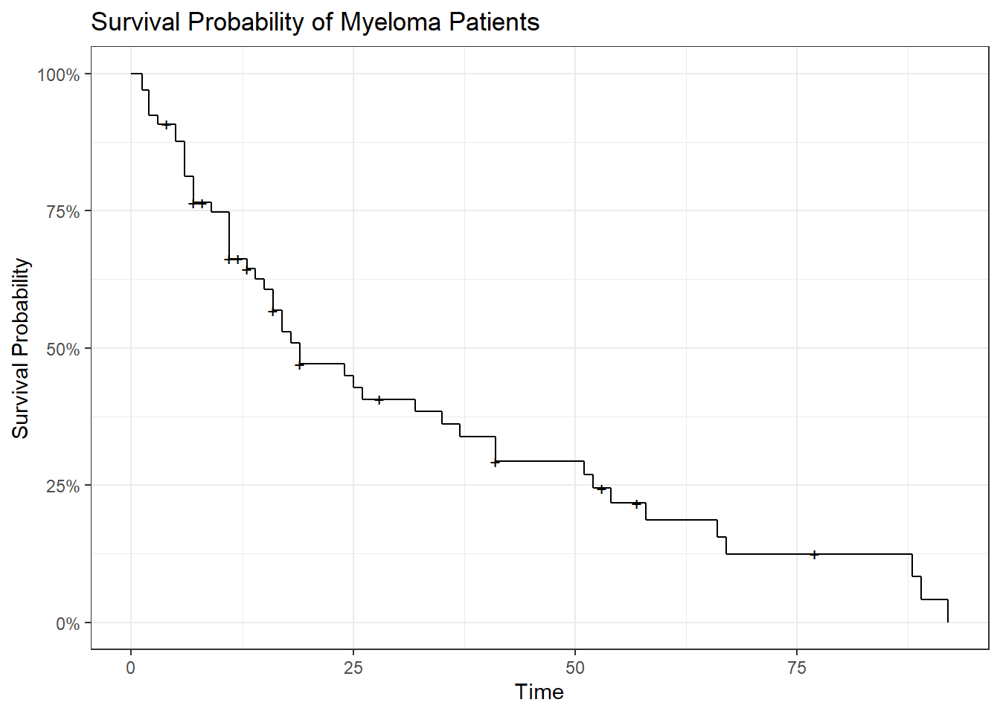
Looking at the censoring times they seem to be spread out across the survival curve and this is indicative for uninformative censoring which is an assumption of survival analysis.
ggplot(km.fit.nc.sum, aes(x = midtime, y = hazard)) +
geom_point() +
geom_line() +
labs(title = "Hazard Rate of Myeloma Patients Calcuated at the Midpoint",
x = "Time",
y = "Hazard Rate")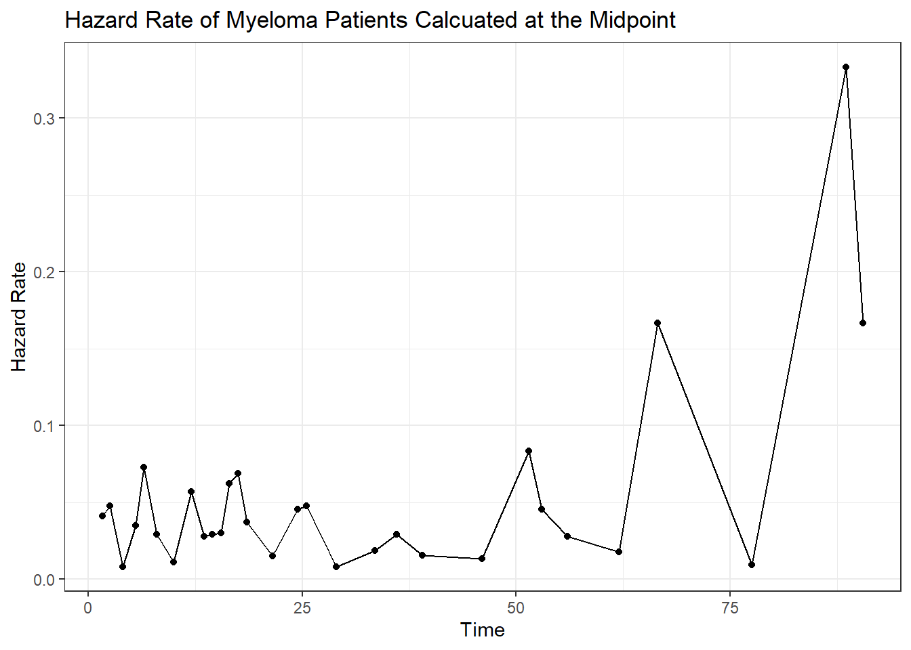
Looking at the hazard rate of the Myeloma Patients we see what looks like a increasing hazard rate when we decided to fit a distribution to the data it is good to know this.
Let’s explore the various covariates in our data to see if they have different and proportional survival curves. We will begin exploring the catagorical variables.
km.fit.platelet <- survfit(survtimes ~ Myeloma$Platelet, conf.type = "log-log")
autoplot(km.fit.platelet, conf.int = F) +
labs(title = "Survival Probability of Myeloma Patients given Platelet",
x = "Time",
y = "Survival Probability",
color = "Platelet")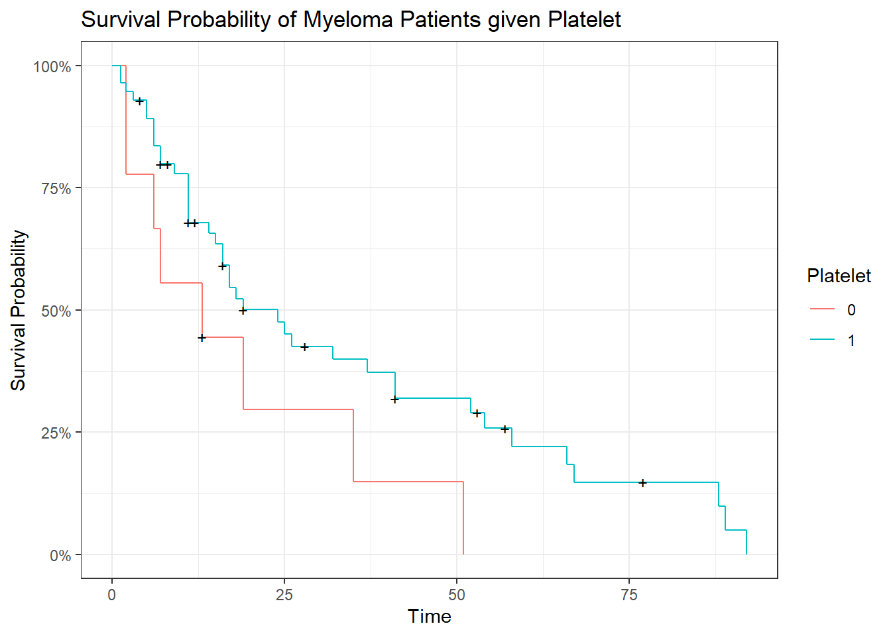
When comparing platelet we see that that the curves look proportional. We see that 0 platelet curve has a smaller survival probability then observations with platelet.
survdiff(survtimes ~ Myeloma$Platelet, rho = 0)## Call:
## survdiff(formula = survtimes ~ Myeloma$Platelet, rho = 0)
##
## N Observed Expected (O-E)^2/E (O-E)^2/V
## Myeloma$Platelet=0 9 8 4.46 2.815 3.29
## Myeloma$Platelet=1 56 40 43.54 0.288 3.29
##
## Chisq= 3.3 on 1 degrees of freedom, p= 0.07Doing a log rank test we see that there is not a significant difference at the .05 level but at the .10 level there is. If we were to model with this variable we could include it in the model.
km.fit.frac <- survfit(survtimes ~ Myeloma$Frac, conf.type = "log-log")
autoplot(km.fit.frac, conf.int = F) +
labs(title = "Survival Probability of Myeloma Patients given Fracture",
x = "Time",
y = "Survival Probability",
color = "Fracture")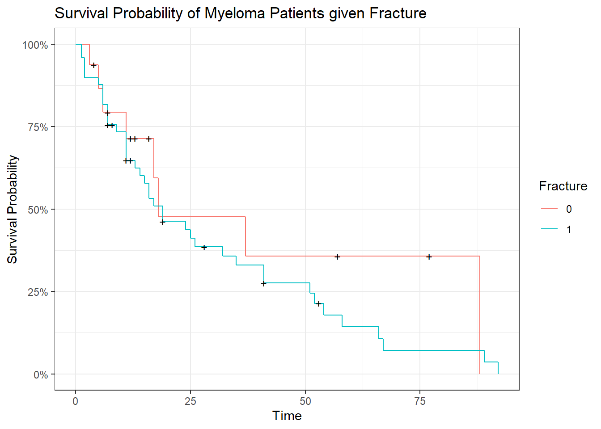
When comparing fracture we see that that the curves do not look that different. We see that 1 fracture curve has a smaller survival probability then observations without a fracture. It is hard to tell if these hazards are proportional. Conceptually a fracture might infleunce the overall lifetime of a patient so it might be okay to assume that the hazards are not proportional.
survdiff(survtimes ~ Myeloma$Frac, rho = 0)## Call:
## survdiff(formula = survtimes ~ Myeloma$Frac, rho = 0)
##
## N Observed Expected (O-E)^2/E (O-E)^2/V
## Myeloma$Frac=0 16 8 10.7 0.694 0.941
## Myeloma$Frac=1 49 40 37.3 0.200 0.941
##
## Chisq= 0.9 on 1 degrees of freedom, p= 0.3We do see a significant difference in the survival probabilities between having a fraction and not which makes sense conceptually as well. For modeling purposes this variable could provide helpful insights.
Handling continuous variables with kaplian meier curves is tricky since we will need to bucket the variable into catagories.
km.fit.logbun <- survfit(survtimes ~ quantile_variable(Myeloma$LogBUN, 3), conf.type = "log-log")
autoplot(km.fit.logbun, conf.int = F) +
labs(title = "Survival Probability of Myeloma Patients given LogBun",
x = "Time",
y = "Survival Probability",
color = "LogBun Buckets") 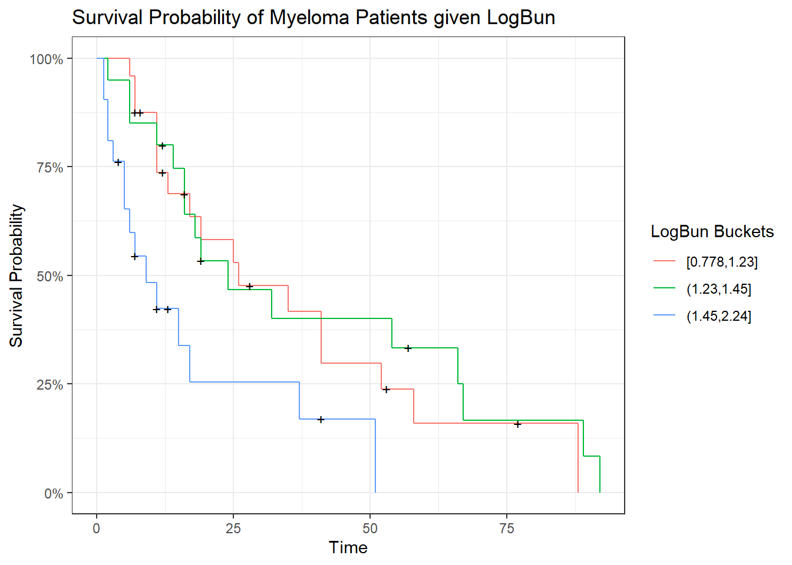
Looking at the curves we see the highest level of LogBun looks to be different and smalller from the rest of the levels.
survdiff(survtimes ~ quantile_variable(Myeloma$LogBUN, 3), rho = 0)## Call:
## survdiff(formula = survtimes ~ quantile_variable(Myeloma$LogBUN,
## 3), rho = 0)
##
## N Observed Expected
## quantile_variable(Myeloma$LogBUN, 3)=[0.778,1.23] 24 17 19.7
## quantile_variable(Myeloma$LogBUN, 3)=(1.23,1.45] 20 16 20.7
## quantile_variable(Myeloma$LogBUN, 3)=(1.45,2.24] 21 15 7.6
## (O-E)^2/E (O-E)^2/V
## quantile_variable(Myeloma$LogBUN, 3)=[0.778,1.23] 0.371 0.673
## quantile_variable(Myeloma$LogBUN, 3)=(1.23,1.45] 1.067 2.128
## quantile_variable(Myeloma$LogBUN, 3)=(1.45,2.24] 7.213 9.450
##
## Chisq= 9.6 on 2 degrees of freedom, p= 0.008Doing with log rank test we see that there is at least one group different. We hypothesis that it is the larger logbun.
Myeloma <- Myeloma %>%
mutate(LogBun_Bucket = quantile_variable(LogBUN, 3))
survminer::pairwise_survdiff(Surv(Time, VStatus) ~ LogBun_Bucket, Myeloma, p.adjust.method = "bonferroni")##
## Pairwise comparisons using Log-Rank test
##
## data: Myeloma and LogBun_Bucket
##
## [0.778,1.23] (1.23,1.45]
## (1.23,1.45] 1.000 -
## (1.45,2.24] 0.036 0.031
##
## P value adjustment method: bonferroniDoing pairwise test we see that it is the high level of LogBun that is different then the other levels. This could indicate that the effect of LogBun is non linear with survival probability though not necessarily as we use quantiles to bucket the data and it is not uniformly spaced.
km.fit.HGB <- survfit(survtimes ~ quantile_variable(Myeloma$HGB, 3), conf.type = "log-log")
autoplot(km.fit.HGB, conf.int = F) +
labs(title = "Survival Probability of Myeloma Patients given HGB",
x = "Time",
y = "Survival Probability",
color = "HGB Buckets") 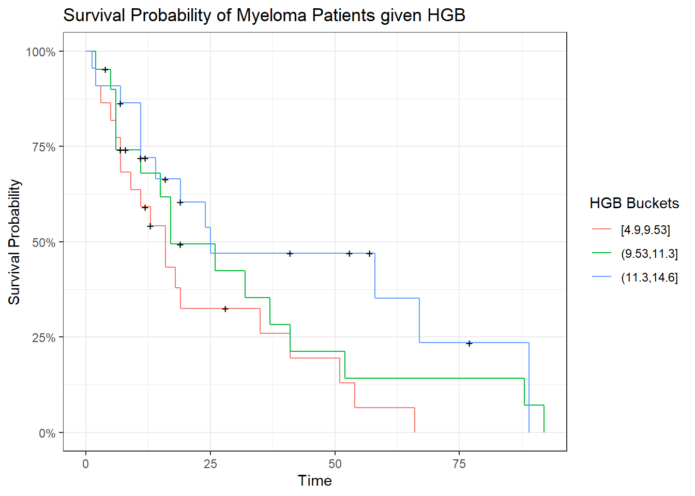
Looking at these curves it seems that higher levels of HGB has a positive effect on survival probability.
km.fit.Age <- survfit(survtimes ~ quantile_variable(Myeloma$Age, 3), conf.type = "log-log")
autoplot(km.fit.Age , conf.int = F) +
labs(title = "Survival Probability of Myeloma Patients given Age",
x = "Time",
y = "Survival Probability",
color = "Age Buckets") 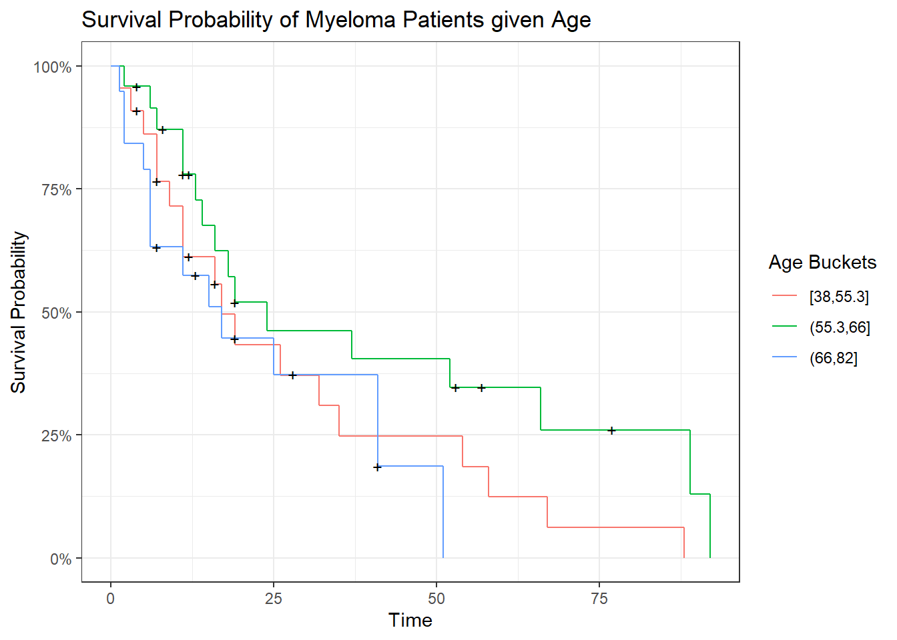
Looking at age the groups of age don’t seem to be that different with each other. For modeling this variable may not be important. Though it may be conceptually an important variable to include anyway to control for age.
survdiff(survtimes ~ quantile_variable(Myeloma$Age, 3), rho = 0)## Call:
## survdiff(formula = survtimes ~ quantile_variable(Myeloma$Age,
## 3), rho = 0)
##
## N Observed Expected (O-E)^2/E
## quantile_variable(Myeloma$Age, 3)=[38,55.3] 22 18 15.2 0.509
## quantile_variable(Myeloma$Age, 3)=(55.3,66] 24 16 22.4 1.841
## quantile_variable(Myeloma$Age, 3)=(66,82] 19 14 10.4 1.280
## (O-E)^2/V
## quantile_variable(Myeloma$Age, 3)=[38,55.3] 0.787
## quantile_variable(Myeloma$Age, 3)=(55.3,66] 3.837
## quantile_variable(Myeloma$Age, 3)=(66,82] 1.798
##
## Chisq= 4.1 on 2 degrees of freedom, p= 0.1km.fit.LogWBC <- survfit(survtimes ~ quantile_variable(Myeloma$LogWBC, 3), conf.type = "log-log")
autoplot(km.fit.LogWBC, conf.int = F) +
labs(title = "Survival Probability of Myeloma Patients given LogWBC",
x = "Time",
y = "Survival Probability",
color = "LogWBC Buckets") 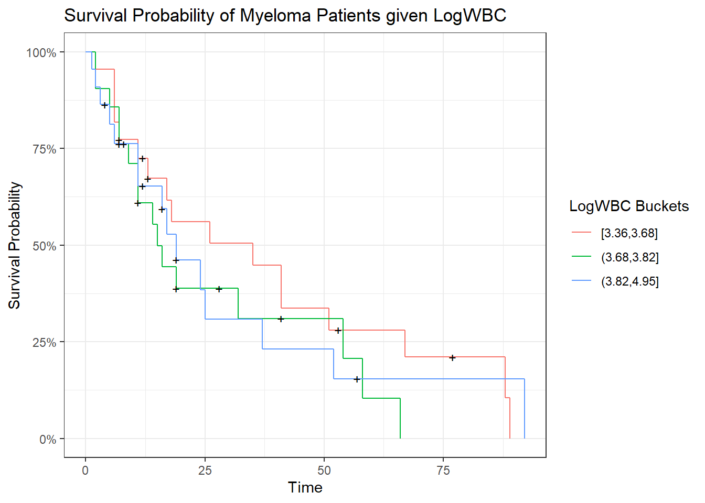
Looking at LogWBC the curves do not look that different. As such this variable might not tell us information in modeling survival probability.
survdiff(survtimes ~ quantile_variable(Myeloma$LogWBC, 3), rho = 0)## Call:
## survdiff(formula = survtimes ~ quantile_variable(Myeloma$LogWBC,
## 3), rho = 0)
##
## N Observed Expected (O-E)^2/E
## quantile_variable(Myeloma$LogWBC, 3)=[3.36,3.68] 22 17 20.0 0.45385
## quantile_variable(Myeloma$LogWBC, 3)=(3.68,3.82] 21 16 13.3 0.52911
## quantile_variable(Myeloma$LogWBC, 3)=(3.82,4.95] 22 15 14.6 0.00869
## (O-E)^2/V
## quantile_variable(Myeloma$LogWBC, 3)=[3.36,3.68] 0.8476
## quantile_variable(Myeloma$LogWBC, 3)=(3.68,3.82] 0.7884
## quantile_variable(Myeloma$LogWBC, 3)=(3.82,4.95] 0.0138
##
## Chisq= 1.1 on 2 degrees of freedom, p= 0.6km.fit.LogPBM <- survfit(survtimes ~ quantile_variable(Myeloma$LogPBM, 3), conf.type = "log-log")
autoplot(km.fit.LogPBM, conf.int = F) +
labs(title = "Survival Probability of Myeloma Patients given LogPBM",
x = "Time",
y = "Survival Probability",
color = "LogPBM Buckets") 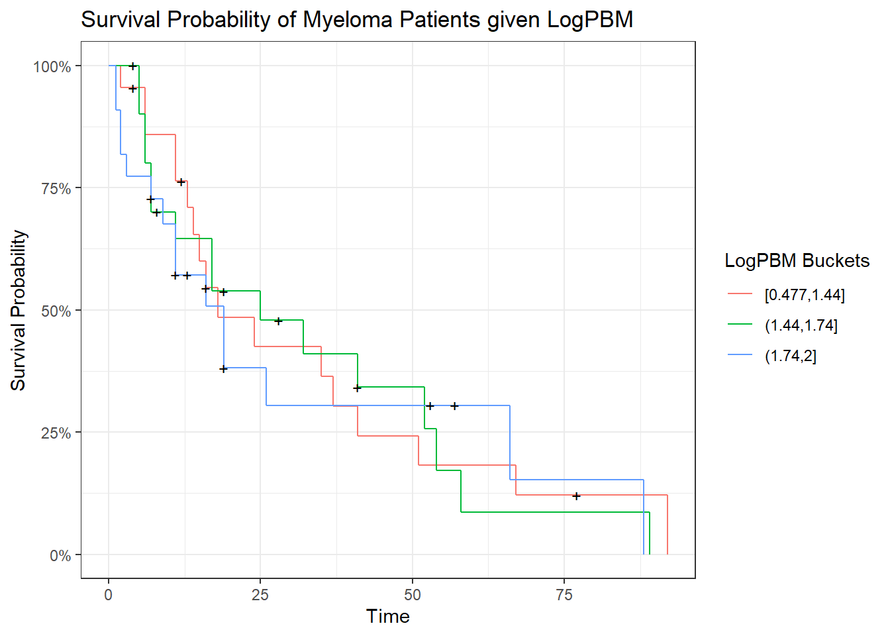
This variable also does not look look different in the survival probabilities.
survdiff(survtimes ~ quantile_variable(Myeloma$LogWBC, 3), rho = 0)## Call:
## survdiff(formula = survtimes ~ quantile_variable(Myeloma$LogWBC,
## 3), rho = 0)
##
## N Observed Expected (O-E)^2/E
## quantile_variable(Myeloma$LogWBC, 3)=[3.36,3.68] 22 17 20.0 0.45385
## quantile_variable(Myeloma$LogWBC, 3)=(3.68,3.82] 21 16 13.3 0.52911
## quantile_variable(Myeloma$LogWBC, 3)=(3.82,4.95] 22 15 14.6 0.00869
## (O-E)^2/V
## quantile_variable(Myeloma$LogWBC, 3)=[3.36,3.68] 0.8476
## quantile_variable(Myeloma$LogWBC, 3)=(3.68,3.82] 0.7884
## quantile_variable(Myeloma$LogWBC, 3)=(3.82,4.95] 0.0138
##
## Chisq= 1.1 on 2 degrees of freedom, p= 0.6km.fit.Protein <- survfit(survtimes ~ ifelse(Myeloma$Protein > 0, "1 or more", "0"), conf.type = "log-log")
autoplot(km.fit.Protein, conf.int = F) +
labs(title = "Survival Probability of Myeloma Patients given Protein",
x = "Time",
y = "Survival Probability",
color = "Protein Buckets") 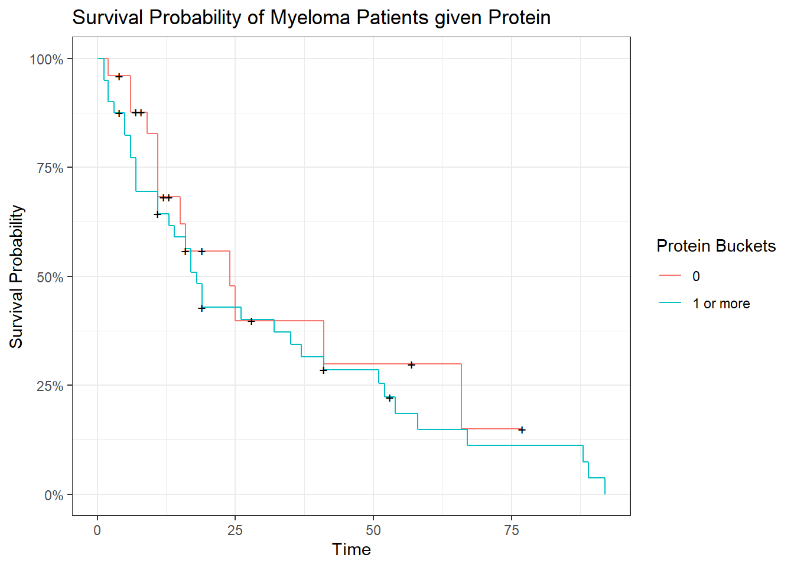
Protein is an interesting variable as most of the observations are 0 or 1. Closer analysis is needed to determine the relationship with protein and survival probability but so far it does not seem to explain survival probabilty.
km.fit.SCalc <- survfit(survtimes ~ quantile_variable(Myeloma$SCalc, 3), conf.type = "log-log")
autoplot(km.fit.SCalc, conf.int = F) +
labs(title = "Survival Probability of Myeloma Patients given SCalc",
x = "Time",
y = "Survival Probability",
color = "SCalc Buckets") 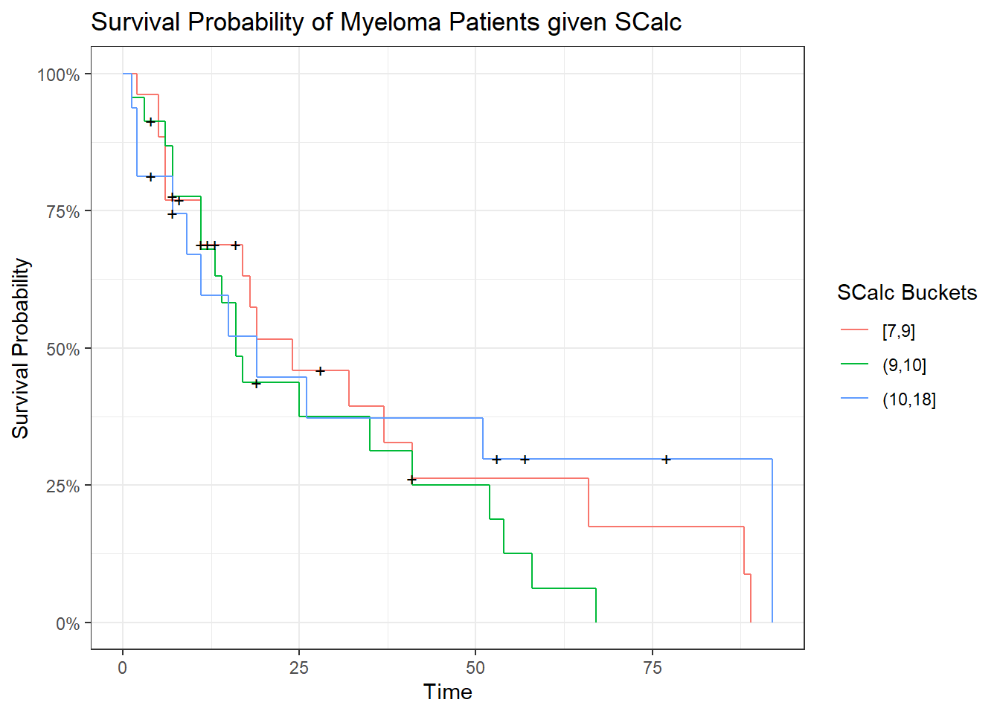
SCalc also does not seem to contribute to the survival probability.
When looking at variations in the kaplan meir curves we see some covariates are good possible candidate for modeling the hazard rate of Myeloma patients.
Variables Summary: